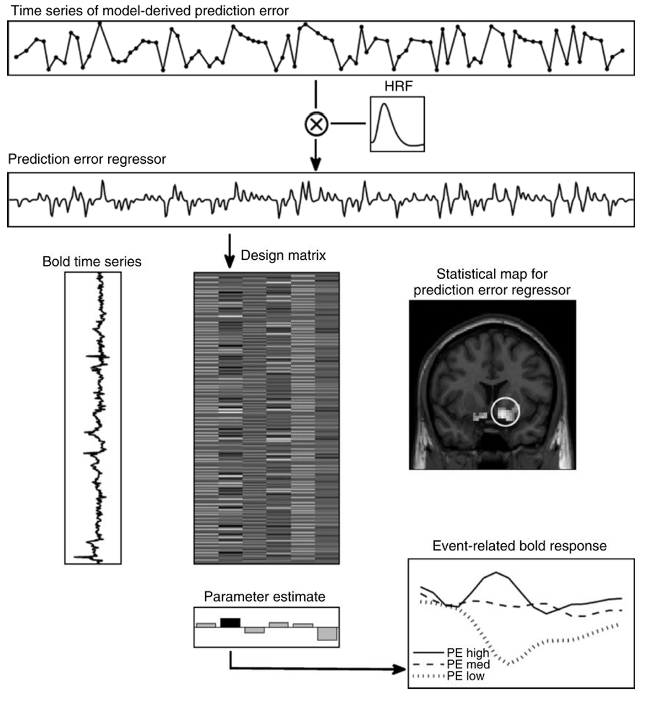
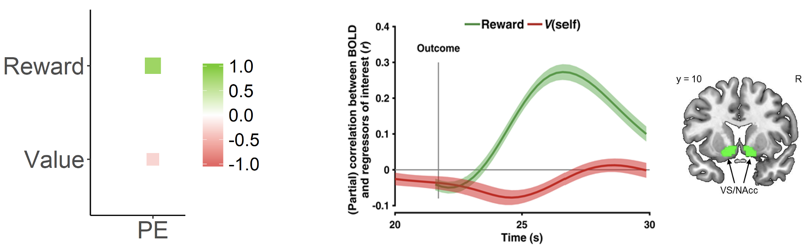

An introduction to model-based fMRI
Determining the neural basis of cognitive computations
So far in this course, we have focused on using computational models to uncover latent variables from behavioural data - specifically choice data collected when participants complete experimental tasks on a computer. However, the principles of computational modeling are incredibly versatile and can be applied to many different types of data. Beyond behavioral choices, we can use these same approaches to analyze physiological measures like skin conductance responses and eye movements, as well as neural data from brain imaging. In this bonus workshop, we will briefly explore how we can combine our computational models with functional magnetic resonance imaging (fMRI) through “model-based fMRI”.
What is model-based fMRI?
Model-based fMRI12 allows us to link computational processes to brain activity. Rather than just looking at which brain areas activate during a task, this approach lets us identify which regions might be computing specific variables in our computational model. The stages of running a model-based fMRI analysis are depicted below3:

The model-based fMRI pipeline, as applied to a prediction error parameter
Let’s break down how this works using our reinforcement learning model as an example:
1. First, we fit our computational model to participants’ behavioural data as we’ve done before, giving us trial-by-trial estimates of key variables:
Action values \((V)\) for each choice option
Prediction errors \((PE)\) when outcomes are received
These trial-by-trial estimates form time series that capture how these variables evolve over the course of the experiment.
For example, in reinforcement learning we commonly track:
The value update:
\[V_{t+1} = V_t + \alpha PE_t\]
and the prediction error:
\[PE_t = R_t - V_t\]
2. We then take these trial-by-trial estimates and convolve them with the haemodynamic response function to account for the nature of the BOLD signal.
- This creates a model-based regressor that predicts how brain activity should vary if a region is computing that variable.
3. These processed regressors are then included in a general linear model (GLM) analysis which tests how well each regressor explains the BOLD signal at each voxel in the brain.
- Ultimately, this creates a statistical map showing regions where activity significantly correlates with our model variables.
When visualizing the results, parameter estimates can show the strength of correlation between the model regressor and BOLD activity in different brain regions (bottom middle), whilst plotting the trial-by-trial event-related BOLD response (bottom right) can show how brain activity varies with different levels of the model variable (e.g., high vs medium vs low prediction errors).
Dissociating prediction errors from reward signals using model-based fMRI
To this end, model-based fMRI is a useful tool for determining the specific computational variables that brain regions may be encoding. We can investigate specific hypotheses regarding neural computation not possible using fMRI as a stand-alone tool.
To demonstrate this, let’s ask ourselves the question as to whether striatal activity truly reflects prediction error computation rather than simply encoding reward value.
Looking at the Rescorla-Wagner equation for the prediction error:
\[PE_t = R_t - V_t\]
We can see that prediction errors are inherently related to reward \((R_t)\). When rewards are received, they contribute positively to the prediction error, which might explain why striatal activity correlates with reward valence. This raises an important question: How can we be confident that striatal activity represents prediction error computation rather than just reward processing?
Looking at the equation again, a true prediction error signal should show a positive correlation with reward \((R_t)\) but a negative correlation with expected value \((V_t)\). This pattern is depicted in the image below on the left.
Subsequently, model-based fMRI gives us a way to specifically test whether striatal activity reflects genuine prediction error computation:
If the BOLD signal is only positively correlated with reward \((R_t)\), this would suggest the region simply processes reward valence
But, if the BOLD signal is positively correlated with reward \((R_t)\) AND negatively correlated with expected value \((V_t)\), this provides stronger evidence for a specific role with computing the prediction error

Model-based fMRI suggests that striatal activity represents prediction error computation rather than just responding to reward valence
As shown on the right in the figure above, model-based fMRI4 reveals exactly this pattern in the ventral striatum/nucleus accumbens, where activity was found to increase with reward but decreases with expected value, matching the computational signature of a prediction error signal. This dissociation provides compelling evidence that the striatum is computing prediction errors rather than merely responding to rewards.
Footnotes
Gläscher, J. P., & O’Doherty, J. P. (2010). Model‐based approaches to neuroimaging: combining reinforcement learning theory with fMRI data. Wiley Interdisciplinary Reviews: Cognitive Science, 1(4), 501-510.↩︎
O’Doherty, J. P., Hampton, A., & Kim, H. (2007). Model‐based fMRI and its application to reward learning and decision making. Annals of the New York Academy of sciences, 1104(1), 35-53.↩︎
Gläscher, J. P., & O’Doherty, J. P. (2010). Model‐based approaches to neuroimaging: combining reinforcement learning theory with fMRI data. Wiley Interdisciplinary Reviews: Cognitive Science, 1(4), 501-510.↩︎
Zhang, L., & Gläscher, J. (2020). A brain network supporting social influences in human decision-making. Science advances, 6(34), eabb4159.↩︎